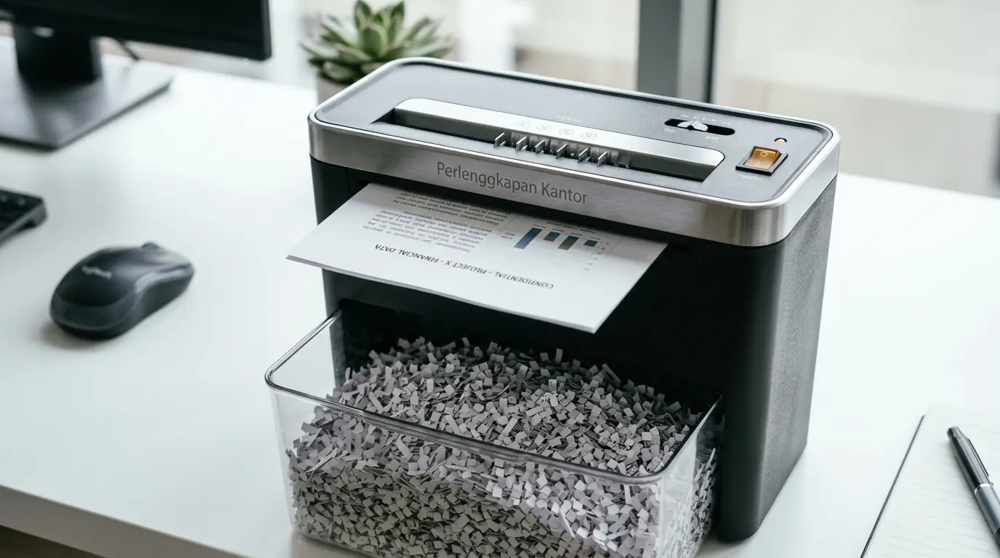

Memilih antara pemotong dokumen mekanis engkol dan mesin pemotong otomatis bertenaga listrik menjadi pertimbangan penting bagi profesional yang membutuhkan pengelolaan kearsipan personal yang aman. Keamanan informasi bisnis tidak hanya berlaku pada berkas digital, tetapi juga dokumen fisik berisi data finansial, catatan operasional, serta lembar verifikasi internal. Penggunaan alat penghancur lembaran kertas di atas meja kerja membantu mencegah kebiasaan menumpuk sampah dokumen sensitif tanpa perlindungan. Dengan memahami karakteristik operasional, ketahanan mata pisau, serta efisiensi harga alat potong kertas di pasaran, Anda dapat menentukan pilihan perangkat input filing yang paling sesuai dengan ritme kerja harian.
Apa Perbedaan Inti Penghancur Kertas Manual vs Elektrik untuk Meja Kerja?
Memahami keunggulan penghancur kertas manual vs elektrik sangat penting agar alokasi anggaran belanja peralatan kantor memberikan nilai guna optimal sesuai beban kerja harian. Menurut Indonesia Office Supplies & Equipment Survey 2025, sebanyak 63% profesional dengan meja kerja individual memilih pemotong dokumen ukuran ringkas untuk memusnahkan 5 hingga 20 lembar dokumen rahasia setiap hari. Di samping itu, data Corporate Archival Security Index 2025 mencatat bahwa penggunaan pemotong kertas personal di area meja kerja berhasil menurunkan risiko kebocoran data dokumen internal hingga 48%.
Model manual bekerja dengan memutar tuas engkol secara mekanis di mana pisau pemotong baja berputar memotong lembaran kertas secara langsung tanpa pasokan daya. Model ini sangat cocok untuk meja kerja minimalis, tidak memakan tempat, serta bebas dari suara kebisingan motorik. Sebaliknya, varian elektrik digerakkan oleh motor listrik yang menyala otomatis saat kertas menyentuh sensor masukan (auto-start/stop). Varian otomatis ini mempercepat pemusnahan dokumen dalam jumlah sedang hingga besar tanpa memerlukan tenaga fisik tambahan dari pengguna.
Kapan Anda Harus Memilih Paper Shredder Mini Meja Tipe Manual?
Model pemotong dokumen manual atau paper shredder mini meja merupakan opsi tepat apabila kebutuhan pemusnahan dokumen bersifat sewaktu-waktu dan bervolume rendah.
Berikut adalah pertimbangan utama mengapa model manual menjadi pilihan ideal bagi sebagian unit kerja:
- Bebas Ketergantungan Energi Listrik: Dapat diletakkan di mana saja tanpa harus berdekatan dengan stopkontak dinding atau kabel sambungan (extension cord).
- Desain Ringkas dan Hemat Ruang: Dimensi yang kompak membuat alat ini mudah disimpan di dalam laci meja, rak dokumen, atau dipindahkan saat kerja fleksibel (hybrid work).
- Tingkat Kebisingan Nol (Zero Noise): Karena tidak menggunakan komponen motorik, pemotongan berkas berjalan tenang tanpa mengganggu konsentrasi rekan kerja di sekitar.
- Ekonomis dan Bebas Perawatan Elektrik: Struktur internal yang murni mekanis membuat biaya kepemilikan sangat terjangkau tanpa risiko kerusakan modul sirkuit.
Perlengkapan Kantor menyediakan kurasi alat tulis dan perlengkapan kearsipan esensial dengan standar ketahanan tinggi yang siap mendukung fleksibilitas kerja tim Anda.
Mengapa Tipe Elektrik Lebih Disukai untuk Intensitas Kerja Tinggi?
Keunggulan utama pemotong dokumen elektrik terletak pada kecepatan operasional, presisi hasil potongan, serta kepraktisan penggunaan harian.

Penggunaan paper shredder mini meja elektrik hemat daya untuk penghancuran dokumen rahasia secara otomatis dan presisi.
Saat mengolah puluhan dokumen cetak per hari, memutar engkol manual secara berulang dapat menyita waktu produktif. Unit elektrik dilengkapi dengan pisau potong baja khusus berteknologi Cross-Cut maupun Micro-Cut yang mampu merusak lembaran kertas hingga menjadi partikel kecil yang tidak dapat direkonstruksi kembali. Fitur keamanan seperti overheat protection dan reverse button untuk mengatasi kertas tersangkut (jamming) menjadi nilai tambah utama yang menjamin keandalan perangkat listrik ini.
Tingkatkan standar keamanan dokumen dan tata kelola meja kerja Anda dengan produk ATK berkualitas. Beli Paket ATK Bulanan dari Perlengkapan Kantor sekarang untuk mendapatkan penawaran harga bundel paling hemat!
Komparasi Spesifikasi Penghancur Kertas Manual dan Elektrik
Untuk memberikan gambaran menyeluruh bagi pengambil keputusan dan tim operasional, berikut tabel perbandingan teknis antara kedua jenis perangkat:
| Parameter Fitur | Tipe Manual Engkol | Tipe Elektrik Mini Meja | Tipe Elektrik Heavy Duty |
|---|---|---|---|
| Sumber Daya | Tenaga Manusia (Engkol) | Listrik AC (220V / Low Watt) | Listrik AC (High Performance) |
| Kapasitas Sekali Potong | 1 - 2 Lembar (70 gsm) | 5 - 8 Lembar (70 gsm) | 12 - 20 Lembar (70 gsm) |
| Gaya Potongan (Cut Type) | Strip-Cut (Helaian Panjang) | Cross-Cut (Potongan Dadu) | Micro-Cut (Partikel Sangat Kecil) |
| Tingkat Keamanan DIN | DIN P-1 s.d P-2 | DIN P-3 s.d P-4 | DIN P-4 s.d P-5 |
| Sensitivitas Material | Khusus Kertas Tipis | Kertas, Staples, Kartu Kredit | Kertas, Staples, Klip, CD/DVD |
| Ekspektasi Harga Alat | Sangat Terjangkau | Ekonomis Menengah | Investasi Profesional |
Bagaimana Cara Menjaga Kinerja Pisau Pemotong Kertas Agar Tetap Tajam?
Pengoperasian yang benar akan memperpanjang umur pakai pisau pemotong dokumen, baik pada varian manual maupun elektrik bertenaga listrik:
- Hindari Memasukkan Lembar Melebihi Kapasitas: Selalu patuhi batas maksimal ketebalan lembaran agar poros pisau tidak melengkung atau gir pemutar tidak aus.
- Lepaskan Klip Tebal Sebelum Memotong: Walaupun sebagian unit elektrik sanggup memotong staples kecil, melepas klip kertas berukuran besar akan mencegah mata pisau tergores atau sumbing.
- Gunakan Pelumas Lembar Khusus secara Berkala: Lumasi blok pemotong menggunakan shredder lubricant sheet atau oli khusus secara teratur guna mencegah gesekan kering yang memicu tumpulnya mata pisau.
Mengapa Memilih Pengadaan Peralatan Kantor di Perlengkapan Kantor?
Sebagai distributor dan penyedia utama perlengkapan kantor, Perlengkapan Kantor menghadirkan pilihan produk kearsipan, mesin kantor, dan alat tulis kantor (ATK) esensial yang dirancang untuk mendukung efisiensi korporat. Seluruh produk kami telah melalui kualifikasi mutu ketat untuk memastikan keandalan fungsi dalam jangka panjang.
Kami melayani pembelian langsung eceran maupun pasokan rutin bulanan skala B2B untuk kebutuhan operasional kantor Anda. Dengan jaminan garansi resmi, kemudahan pembayaran, serta sistem pengiriman terpadu, Anda dapat mengelola kebutuhan sarana kerja secara praktis dan efisien.
Dapatkan paket alat tulis dan peralatan kearsipan kantor terlengkap dengan jaminan kualitas terbaik. Beli Paket ATK Bulanan di Perlengkapan Kantor sekarang juga!
Pertanyaan Populer Seputar Penghancur Kertas (FAQ)
Kesimpulan Praktis
Penentuan antara penghancur kertas manual vs elektrik sangat bergantung pada volume dokumen harian, ketersediaan ruang meja kerja, serta alokasi anggaran Anda. Tipe manual unggul dalam hal kepraktisan tanpa listrik dan ukuran ringkas, sedangkan tipe elektrik memberikan efisiensi tinggi serta tingkat keamanan potongan dokumen yang lebih ketat.
Lengkapi kebutuhan peralatan kantor dan kearsipan perusahaan Anda bersama penyedia tepercaya yang menjamin mutu serta ketersediaan stok secara konsisten. Penuhi seluruh kebutuhan sarana operasional kerja Anda sekarang. Beli Paket ATK Bulanan hanya melalui Perlengkapan Kantor!

Penulis: Tim Spesialis Perlengkapan Kantor
Divisi Office Technology, ATK & Kearsipan di Perlengkapan Kantor. Berpengalaman dalam menyajikan panduan spesifikasi alat potong kertas, rekomendasi perangkat operasional kantor modern, dan solusi pengadaan korporat terpercaya.